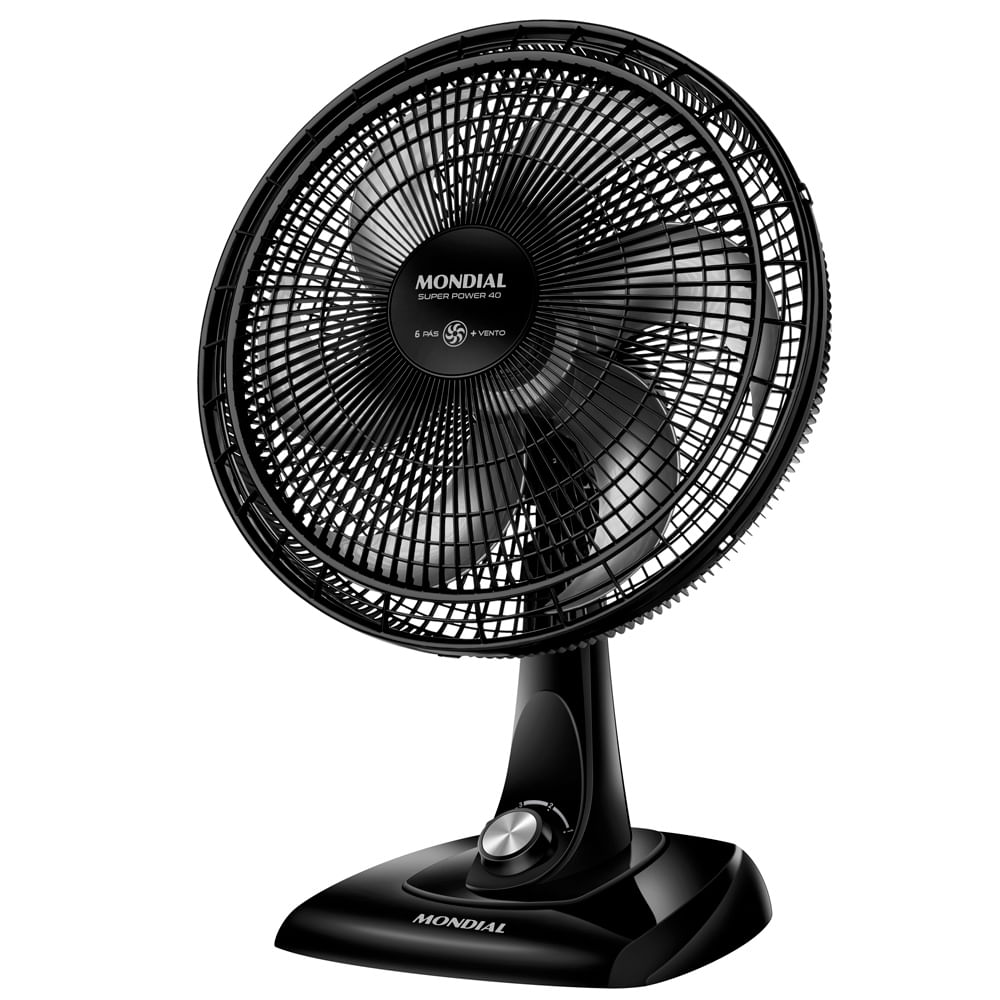

Descoberta nº 001Rascunho
Ventilador de mesa Mondial Super Power 40 cm
Por que escolhemos
- Nota 4,74 de 5, com mais de 50 mil avaliações na página da loja.
- A grade da frente sai, então dá para limpar.
- Gira para os lados e inclina para cima e para baixo.
Atenção: Não é bivolt. Escolha 110V ou 220V antes de comprar.
Nota 4,74 de 5 (50.170 avaliações) na página da loja, em 11/11/2026.
Sobre o produto
Ventilador de mesa de 40 cm, com 6 pás, 3 velocidades e 140 W (o gasto de energia). Ele gira para os lados e inclina na vertical. A grade da frente sai para limpar, a alça ajuda a levar de um cômodo para outro e a base não escorrega. Não espere silêncio: um teste de uso achou o barulho acima do que a marca promete.
Ficha técnica
| Marca | Mondial |
|---|---|
| Modelo | VSP-40-B |
| Tamanho da hélice | 40 cm |
| Pás | 6 |
| Velocidades | 3 |
| Potência | 140 W |
| Voltagem | 110V ou 220V (não é bivolt) |
| Tomada | 10 A |
| Material | Polipropileno |
| Cor | Preto e prata |
| Peso | 2,45 kg |
| Tamanho | 45 cm de largura, 62,5 cm de altura e 32 cm de profundidade |
| Garantia | 1 ano |
| Na caixa | Ventilador e manual |